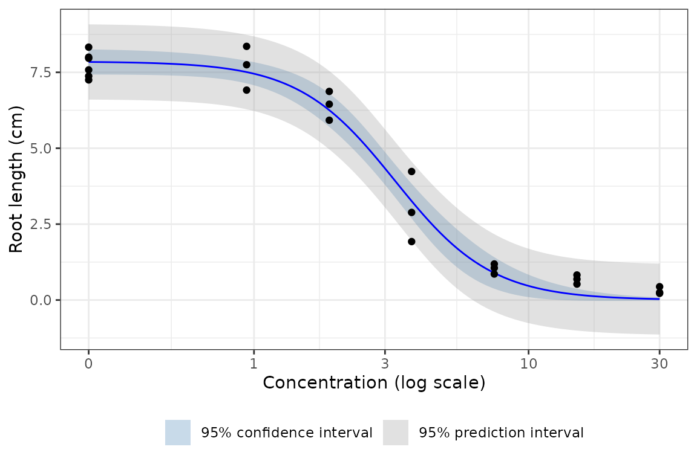
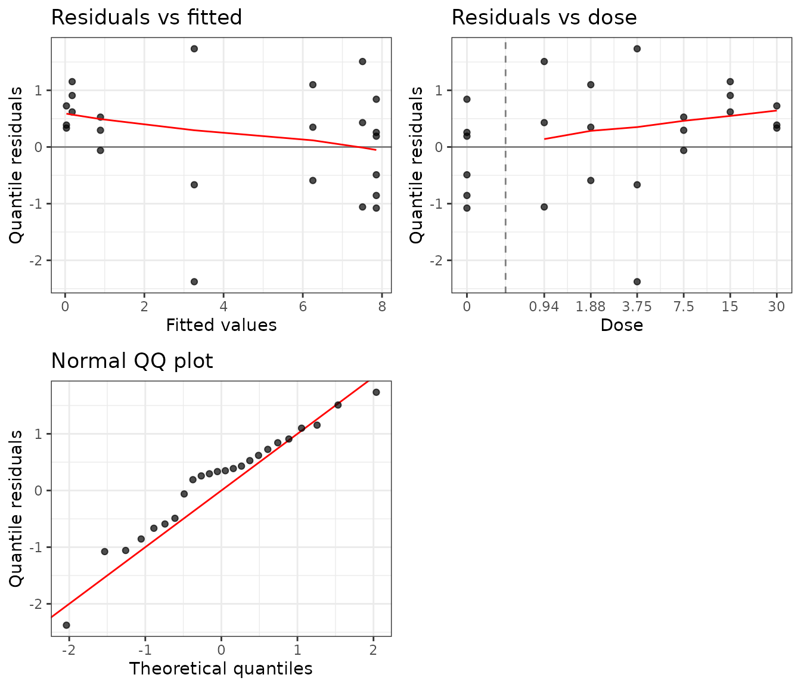
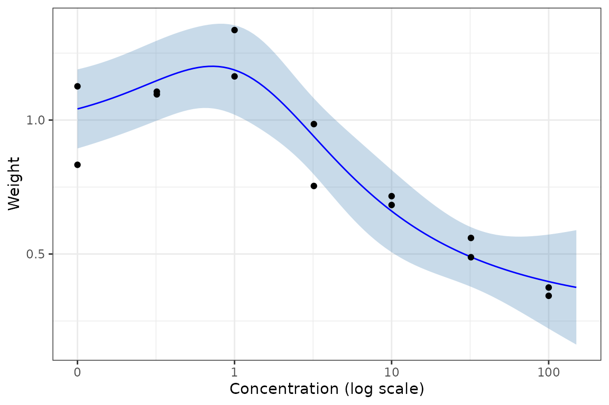
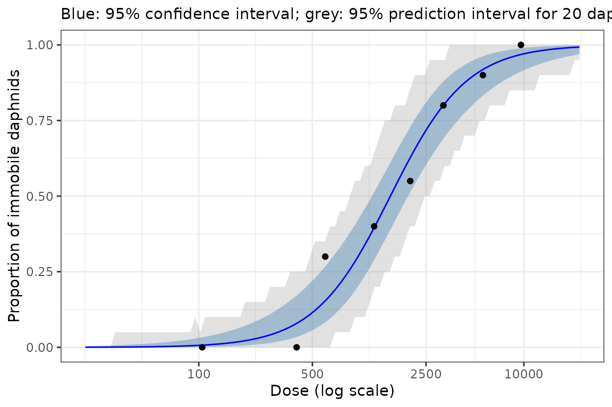
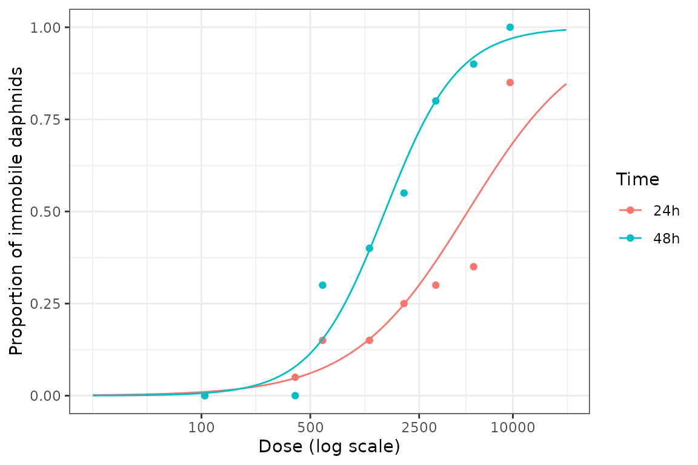
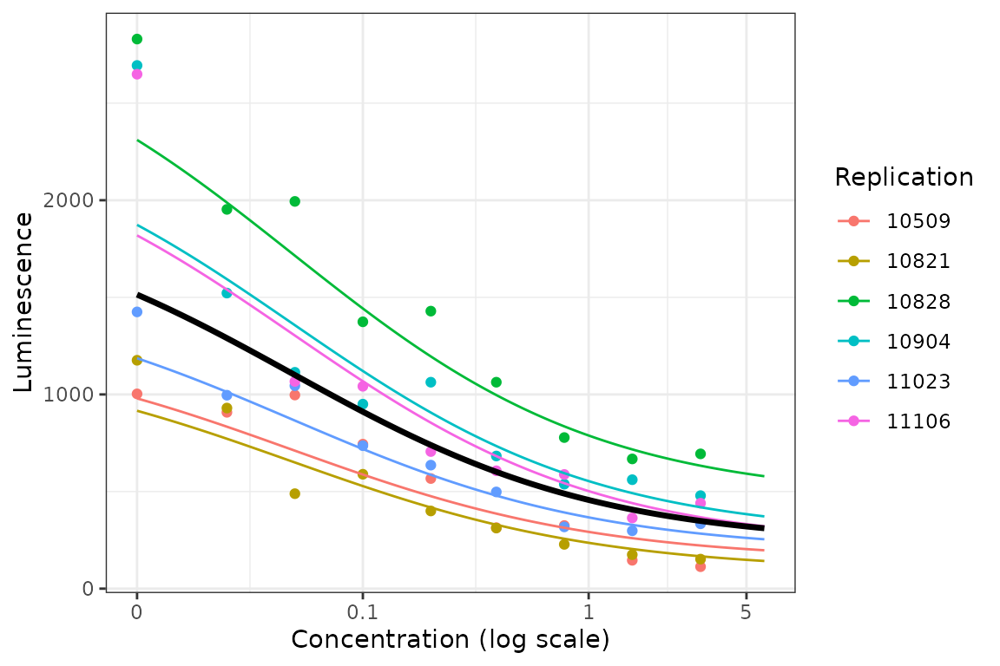
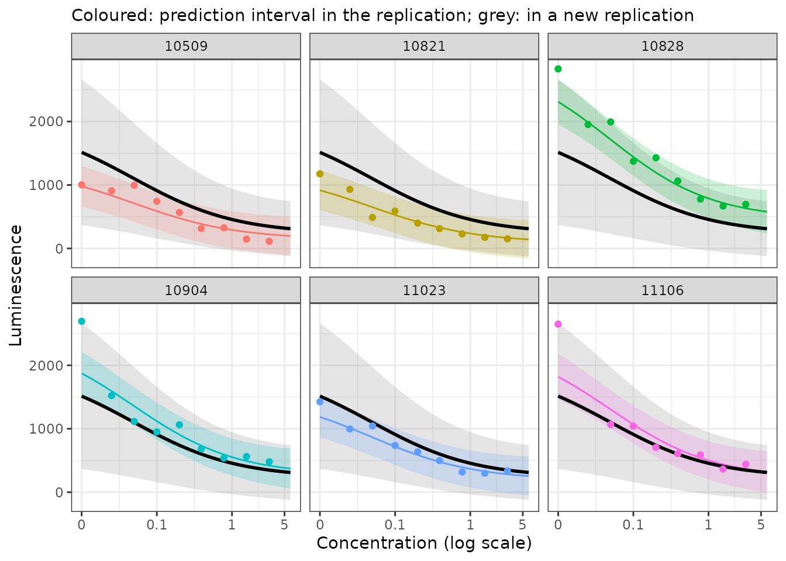
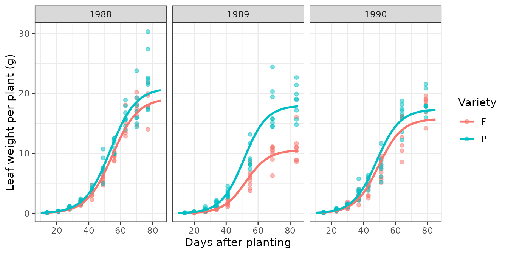

drcTMB: dose-response models with TMB
Daniel Gerhard
2026-11-23
Source:vignettes/drcTMB.rmd
drcTMB.rmdIntroduction
drcTMB fits nonlinear dose-response models by maximum likelihood with
the Template Model Builder (TMB). The interface resembles
drm() of the drc package. TMB’s automatic differentiation
and Laplace approximation extend the models beyond nonlinear
regression:
- non-normal responses (binomial, counts, proportions, time-to-event data),
- covariates and random effects on every parameter of the curve,
- correlated residuals and variance functions,
- priors, and Bayesian benchmark doses.
Effective doses and benchmark doses, with their standard errors and confidence intervals, are available for all of these models.
The examples use data sets of drcTMB, most of them from the package drcData, and of nlme; the plots use ggplot2.
Fitting a dose-response model
Models and parameters
drmTMB() takes a formula response ~ dose,
the data, and the name of a model function in the argument
model. All models share the parameter names b1 to b5:
| Parameter | Meaning |
|---|---|
| b1 | lower asymptote |
| b2 | upper asymptote |
| b3 | steepness; positive for an increasing, negative for a decreasing curve |
| b4 | location of the inflection point on the dose scale (e.g. the ED50) |
| b5 | asymmetry, on the log scale (b5 = 0 is a symmetric curve) |
Some models use the parameters differently:
- michaelismenten, asymptoticregression, exponentialdecay, gamma: b1 is the response at dose zero and b2 the asymptote at high doses.
- braincousens, cedergreen (hormesis): b5 is the size of the stimulation at low doses, see Hormesis.
- exponential, power: no upper asymptote, see Benchmark doses.
The available models are:
model |
Curve | Similar in drc |
|---|---|---|
"loglogistic",
"logistic"
|
sigmoid in log(dose) or dose |
LL.5(), L.5()
|
"weibull1", "weibull2"
|
asymmetric sigmoid |
W1.4(), W2.4()
|
"lognormal", "gompertz"
|
sigmoid |
LN.4(), G.4()
|
"braincousens",
"cedergreen"
|
hormesis |
BC.5(), CRS.4a()
|
"nec" |
threshold (no-effect concentration) | NEC.4() |
"michaelismenten",
"haldane"
|
saturation, substrate inhibition | MM.3() |
"asymptoticregression",
"exponentialdecay"
|
exponential approach |
AR.3(), EXD.3()
|
"gamma", "multistage"
|
quantal models of BMDS | |
"exponential", "power"
|
continuous models of PROAST and BMDS | |
"constant" |
no dose effect |
The formulas of all models are given in the Appendix.
The argument start gives starting values, by name, and
fix (TRUE/FALSE) fixes parameters at their starting values.
Parameters that a model does not use, such as b5 of the Weibull models,
are fixed automatically.
A first model
The root length of ryegrass decreases with the concentration of
ferulic acid. A log-logistic model with the lower asymptote b1 fixed at
0 and without asymmetry (b5 = 0) is the three-parameter model
LL.3() of drc.
data(ryegrass)
mod <- drmTMB(rootl ~ conc, data = ryegrass, model = "loglogistic",
start = c(b1 = 0, b5 = 0), fix = c(b1 = TRUE, b5 = TRUE))
mod
#> Call:
#> drmTMB(form = rootl ~ conc, data = ryegrass, start = c(b1 = 0,
#> b5 = 0), fix = c(b1 = TRUE, b5 = TRUE), model = "loglogistic")
#>
#> Model: loglogistic
#> Family: gaussian, identity link for the asymptotes
#>
#> Coefficients:
#> b2:(Intercept) b3:(Intercept) b4:(Intercept)
#> 7.855 -2.470 3.263
#> Fixed: b1:(Intercept) = 0, b5:(Intercept) = 0
#>
#> Residual standard deviation: 0.5616The model is fitted by maximum likelihood. For gaussian and lognormal
models without random effects, the inference follows lm(),
nls() and drc by default:
- the residual standard deviation uses the unbiased residual variance
with n - p residual degrees of freedom
(
df.residual(mod)), - the standard errors are scaled accordingly,
- confidence and prediction intervals use t quantiles.
With control = drmTMBcontrol(smallsample = FALSE), they
use the maximum likelihood estimate and normal quantiles instead. The
other families and all models with random effects use maximum likelihood
and normal quantiles.
Confidence and prediction intervals
predict() gives the fitted curve. With
interval = "confidence", it adds standard errors and
confidence intervals for the mean response (delta method). With
interval = "prediction", the intervals are for a new
observation and include the residual variation. The result is a data
frame with the columns fit, se.fit,
lwr and upr.
# the controls (conc = 0) are drawn at a small concentration on the log axis
ryegrass$cplot <- ifelse(ryegrass$conc == 0, 0.25, ryegrass$conc)
ndata <- data.frame(conc = exp(seq(log(0.25), log(30), length.out = 100)))
ci <- predict(mod, newdata = ndata, interval = "confidence")
pri <- predict(mod, newdata = ndata, interval = "prediction")
head(ci, 3)
#> fit se.fit lwr upr
#> 1 7.841681 0.1988884 7.428069 8.255292
#> 2 7.839940 0.1983205 7.427510 8.252370
#> 3 7.837979 0.1977000 7.426839 8.249118
bands <- rbind(cbind(ndata, ci, interval = "95% confidence interval"),
cbind(ndata, pri, interval = "95% prediction interval"))
ggplot(bands, aes(x = conc)) +
geom_ribbon(aes(ymin = lwr, ymax = upr, fill = interval), alpha = 0.3) +
geom_line(data = cbind(ndata, ci), aes(y = fit), colour = "blue") +
geom_point(data = ryegrass, aes(x = cplot, y = rootl)) +
scale_x_log10(breaks = c(0.25, 1, 3, 10, 30), labels = c("0", "1", "3", "10", "30")) +
scale_fill_manual(values = c("steelblue", "grey60")) +
labs(x = "Concentration (log scale)", y = "Root length (cm)", fill = NULL) +
theme_bw() +
theme(legend.position = "bottom")
Alternatively, the intervals can come from a parametric bootstrap:
bootstrap() simulates new responses from the fitted model
and fits the model again to each of them. The same bootstrap sample can
be reused for predict() and confint().
Model comparison
anova() compares nested models fitted to the same data
by likelihood ratio tests, here the model with the lower asymptote fixed
at 0 against a model with an estimated lower asymptote:
mod4 <- update(mod, start = c(b5 = 0), fix = c(b5 = TRUE))
anova(mod, mod4)
#> Likelihood ratio tests of drmTMB models
#>
#> npar AIC BIC logLik deviance Chisq Df Pr(>Chisq)
#> mod 4 45.208 49.920 -18.604 37.208
#> mod4 5 42.310 48.201 -16.155 32.310 4.898 1 0.02689 *
#> ---
#> Signif. codes: 0 '***' 0.001 '**' 0.01 '*' 0.05 '.' 0.1 ' ' 1For gaussian and lognormal models without random effects, F-tests account for the estimation of the residual variance, as in drc. They are usually preferable for small experiments.
anova(mod, mod4, test = "F")
#> F-tests of drmTMB models
#>
#> npar AIC BIC logLik Res.Df RSS F Df Pr(>F)
#> mod 4 45.208 49.920 -18.604 21 6.6228
#> mod4 5 42.310 48.201 -16.155 20 5.4002 4.528 1 0.04597 *
#> ---
#> Signif. codes: 0 '***' 0.001 '**' 0.01 '*' 0.05 '.' 0.1 ' ' 1The model "constant", with the same mean b1 at all
doses, tests whether the response changes with the dose at all, as
noEffect() in drc:
mod0 <- update(mod, model = "constant", start = NULL, fix = NULL)
anova(mod0, mod)
#> Likelihood ratio tests of drmTMB models
#>
#> npar AIC BIC logLik deviance Chisq Df Pr(>Chisq)
#> mod0 2 128.188 130.54 -62.094 124.188
#> mod 4 45.208 49.92 -18.604 37.208 86.98 2 < 2.2e-16 ***
#> ---
#> Signif. codes: 0 '***' 0.001 '**' 0.01 '*' 0.05 '.' 0.1 ' ' 1The chi-square distribution of the likelihood ratio statistic is only
an approximation here: the steepness and location of the curve are not
identified under the constant model. The same applies to small
experiments and to tests of a standard deviation of random effects
against zero. A parametric bootstrap test, test = "boot",
simulates responses from the smaller model and fits both models to each
of them. With 100 simulations, the smallest possible p-value is
1/101.
anova(mod0, mod, test = "boot", nsim = 100, seed = 1)
#> Parametric bootstrap likelihood ratio tests of drmTMB models
#> Simulations from the smaller model: 100
#>
#> npar AIC BIC logLik deviance Chisq Df Pr(>Chisq) Pr(boot)
#> mod0 2 128.188 130.54 -62.094 124.188
#> mod 4 45.208 49.92 -18.604 37.208 86.98 2 1.2959e-19 0.009901 **
#> ---
#> Signif. codes: 0 '***' 0.001 '**' 0.01 '*' 0.05 '.' 0.1 ' ' 1Model diagnostics
plot() draws the residuals against the fitted values and
against the dose, and a normal QQ plot.
- The default randomised quantile residuals are standard normal under the model, for all families.
- A trend of the residuals against the dose points to a model function that does not fit the data.
-
which = 4adds QQ plots of the predicted random effects for models with random effects.
The graphs are ggplot2 objects, returned invisibly, so a single one can be changed and drawn again.
plot(mod)
Effective doses
ed() estimates effective doses for the response levels
respLev. The effective dose ED p is the dose at which the
response has changed by p% of the difference between the asymptote at
low doses (the control) and the asymptote at high doses. Confidence
intervals from confint() are profile likelihood intervals
by default.
(effdose <- ed(mod, respLev = c(25, 50, 75)))
#> Effective dose estimates:
#>
#> Estimate Std.Error
#> 25:lf1 2.09 0.187
#> 50:lf1 3.26 0.196
#> 75:lf1 5.09 0.421
confint(effdose)
#> Computing profile confidence intervals ...
#> 2.5 % 97.5 %
#> 25:lf1 1.719261 2.496939
#> 50:lf1 2.879163 3.703885
#> 75:lf1 4.332774 6.110914Simultaneous confidence intervals follow from the package multcomp.
For gaussian models without random effects, the residual degrees of
freedom give multivariate t quantiles (df.residual() is
NULL otherwise, and multcomp then uses the normal
distribution).
library(multcomp)
linfct <- diag(3)
rownames(linfct) <- c("ED25", "ED50", "ED75")
confint(glht(effdose, linfct = linfct, df = df.residual(mod)))
#>
#> Simultaneous Confidence Intervals
#>
#> Fit: NULL
#>
#> Quantile = 2.4931
#> 95% family-wise confidence level
#>
#>
#> Linear Hypotheses:
#> Estimate lwr upr
#> ED25 == 0 2.0918 1.6264 2.5573
#> ED50 == 0 3.2634 2.7737 3.7530
#> ED75 == 0 5.0910 4.0408 6.1412With type = "absolute", respLev gives
values of the response instead, and ed() estimates the
doses at which the curve reaches them, here a root length of 2, 4 and 6
cm. These doses depend on the asymptotes as well, which is included in
the standard errors.
Hormesis
Some toxic substances stimulate growth at low doses before the response declines. Two hormesis models add a term to a log-logistic curve:
- Brain and Cousens,
model = "braincousens", with , - Cedergreen, Ritz and Streibig,
model = "cedergreen", with . The argumentalphasets the exponent: 1, 0.5 and 0.25 give the models CRS.a, CRS.b and CRS.c of drc.
Here b2 is the response of the control, b1 the lower asymptote, and
b3 < 0 for the decreasing curve. The hormesis effect b5 is on the
scale of the response, and b5 = 0 is the log-logistic model, so
anova() tests for hormesis. In the lettuce data, the plant
weight increases at low concentrations of isobutyl alcohol.
data(lettuce)
hmod <- drmTMB(weight ~ conc, data = lettuce, model = "braincousens")
hmod0 <- drmTMB(weight ~ conc, data = lettuce, model = "loglogistic",
start = c(b5 = 0), fix = c(b5 = TRUE))
anova(hmod0, hmod, test = "F")
#> F-tests of drmTMB models
#>
#> npar AIC BIC logLik Res.Df RSS F Df Pr(>F)
#> hmod0 5 -9.262 -6.0667 9.631 10 0.20708
#> hmod 6 -15.036 -11.2016 13.518 9 0.11884 6.6819 1 0.02946 *
#> ---
#> Signif. codes: 0 '***' 0.001 '**' 0.01 '*' 0.05 '.' 0.1 ' ' 1
lettuce$cplot <- ifelse(lettuce$conc == 0, 0.1, lettuce$conc)
hdata <- data.frame(conc = exp(seq(log(0.1), log(150), length.out = 100)))
hdata <- cbind(hdata, predict(hmod, newdata = hdata, interval = "confidence"))
ggplot(hdata, aes(x = conc)) +
geom_ribbon(aes(ymin = lwr, ymax = upr), fill = "steelblue", alpha = 0.3) +
geom_line(aes(y = fit), colour = "blue") +
geom_point(data = lettuce, aes(x = cplot, y = weight)) +
scale_x_log10(breaks = c(0.1, 1, 10, 100), labels = c("0", "1", "10", "100")) +
labs(x = "Concentration (log scale)", y = "Weight") +
theme_bw()
The effective dose ED p of a hormesis model is the dose above the peak at which the response has decreased from the control by p% of the difference to the lower asymptote, as in drc. It has no closed form and is found numerically. Its standard errors follow from the implicit function theorem, also with random effects, and profile and bootstrap intervals are available as for the other models.
ed(hmod, respLev = c(10, 50))
#> Effective dose estimates:
#>
#> Estimate Std.Error
#> 10:lf1 3.75 1.4
#> 50:lf1 12.30 12.2peak() estimates the dose at the peak of the stimulation
and the maximal response, as MAX() in drc, with their joint
covariance matrix. respLev = 0 in ed() gives
the dose at which the response returns to the level of the control, the
limit of the stimulation. Profile intervals are not available for the
maximal response; Wald intervals are given for it.
(hpeak <- peak(hmod))
#> Peak of the hormesis curves, dose and response:
#>
#> Estimate Std.Error
#> dose:lf1 0.72 0.2670
#> response:lf1 1.20 0.0694
confint(hpeak)
#> Wald intervals for the response at the peak: profile intervals are not available.
#> Computing profile confidence intervals ...
#> 2.5 % 97.5 %
#> dose:lf1 0.237952 1.431801
#> response:lf1 1.043817 1.357752
ed(hmod, respLev = 0)
#> Effective dose estimates:
#>
#> Estimate Std.Error
#> 0:lf1 2.93 1.05Response distributions
Families
The argument family sets the distribution of the
response, with the same parameterisations as glmmTMB:
family |
Response | Dispersion |
|---|---|---|
"gaussian" (default) |
continuous | residual standard deviation |
"lognormal" |
positive, constant coefficient of variation | standard deviation of log(y) |
"binomial" |
cbind(successes, failures) |
|
"betabinomial" |
overdispersed binomial counts | precision phi |
"poisson" |
counts | |
"nbinom2" |
overdispersed counts | variance mu (1 + mu/theta) |
"nbinom1" |
overdispersed counts | variance mu (1 + phi) |
"beta" |
proportions in (0, 1) | precision phi |
"event" |
counts of events in time intervals | see Time-to-event data |
For the lognormal family, log(y) is normal around the log of the curve. The curve is then the median (geometric mean) of the response, as in PROAST and the BMDS of the US EPA. The log-likelihood is that of y, so AIC compares gaussian and lognormal fits.
A binomial response
For the proportion of immobile daphnids after 48 hours, we fit a two-parameter log-logistic model, with the asymptotes fixed at 0 and 1 and without asymmetry. With only eight doses, b5 cannot be estimated reliably: in a model with b5, the parameters b3, b4 and b5 are almost perfectly correlated, with very large standard errors.
data(daphnids)
d48 <- subset(daphnids, time == "48h")
dmod <- drmTMB(cbind(no, total - no) ~ dose, data = d48, model = "loglogistic", family = "binomial",
start = c(b1 = 0, b2 = 1, b4 = 1000, b5 = 0), fix = c(b1 = TRUE, b2 = TRUE, b5 = TRUE))
dmod
#> Call:
#> drmTMB(form = cbind(no, total - no) ~ dose, data = d48, start = c(b1 = 0,
#> b2 = 1, b4 = 1000, b5 = 0), fix = c(b1 = TRUE, b2 = TRUE,
#> b5 = TRUE), family = "binomial", model = "loglogistic")
#>
#> Model: loglogistic
#> Family: binomial, identity link for the asymptotes
#>
#> Coefficients:
#> b3:(Intercept) b4:(Intercept)
#> 1.85 1509.06
#> Fixed: b1:(Intercept) = 0, b2:(Intercept) = 1, b5:(Intercept) = 0The confidence intervals for the mean proportion are computed on the
logit scale, so that they stay between 0 and 1. For the binomial,
poisson and beta families, prediction intervals are quantiles of new
observations, simulated at nsim draws from the approximate
normal distribution of the estimates. The number of trials of the new
observations comes from the response variables in newdata,
here a new beaker with 20 daphnids at each dose (the value of
no is not used).
ndata <- data.frame(dose = exp(seq(3, log(22000), length.out = 100)), no = 0, total = 20)
cib <- predict(dmod, newdata = ndata, interval = "confidence")
pib <- predict(dmod, newdata = ndata, interval = "prediction", nsim = 2000, seed = 1)
ggplot(cbind(ndata, pib), aes(x = dose)) +
geom_ribbon(aes(ymin = lwr, ymax = upr), fill = "grey60", alpha = 0.3) +
geom_ribbon(data = cbind(ndata, cib), aes(ymin = lwr, ymax = upr), fill = "steelblue", alpha = 0.4) +
geom_line(aes(y = fit), colour = "blue") +
geom_point(data = d48, aes(y = no/total)) +
scale_x_log10(breaks = c(100, 500, 2500, 10000)) +
labs(x = "Dose (log scale)", y = "Proportion of immobile daphnids",
subtitle = "Blue: 95% confidence interval; grey: 95% prediction interval for 20 daphnids") +
theme_bw()
The simulated prediction intervals rely on the normal approximation
of the estimates. For models with poorly identified parameters, a
bootstrap sample (boot = bootstrap(dmod)) is the safer
choice.
Parameter links and bounds
The argument parlink estimates parameters on a
transformed scale, which can improve the optimisation:
- a single link, e.g.
parlink = "logit", applies to the asymptotes b1 and b2; - links named by parameter,
e.g.
parlink = c(b1 = "logit", b4 = "log"), apply to single parameters, with the defaults of the model for the others.
The asymptotes have the identity (default), log or logit link. The log link of b4 is available for the models with a positive b4; random effects on b4 then change the ED50 by a factor between groups, as in a logistic model of the log dose. The asymmetry b5 of the logistic and loglogistic models and the shape b5 of nec always have the log link.
predict(fit, newdata, type = "parameters") gives the
parameters of the curves, e.g. b4 of each group or treatment, on their
original scale or, with scale = "link", on the scale of the
coefficients, with standard errors and confidence intervals.
The arguments lower and upper set bounds
for the parameters.
Curve links
While parlink transforms single parameters,
curvelink is a link of the whole curve, as in a generalised
linear model. The mean (the median for the lognormal family, the
probability for binomial responses) is the inverse link of the
curve:
-
curvelink = "log":exp(f(x)), -
curvelink = "probit":pnorm(f(x)), -
curvelink = "logit":plogis(f(x)).
The lognormal family with curvelink = "log" puts the
curve on the scale of log(y), as in the lognormal models of EFSA (2022).
The power model with a probit or logit curve link gives their quantal
probit and logistic models. Effective doses refer to the curve, while
predict() and the benchmark doses of bmd() are
on the scale of the response.
clmod <- drmTMB(rootl ~ conc, data = ryegrass, model = "weibull2", family = "lognormal",
curvelink = "log", start = c(b5 = 0), fix = c(b5 = TRUE))
clmod
#> Call:
#> drmTMB(form = rootl ~ conc, data = ryegrass, start = c(b5 = 0),
#> fix = c(b5 = TRUE), family = "lognormal", model = "weibull2",
#> curvelink = "log")
#>
#> Model: weibull2
#> Family: lognormal, identity link for the asymptotes; log link of the curve, the mean (median) is exp(curve)
#>
#> Coefficients:
#> b1:(Intercept) b2:(Intercept) b3:(Intercept) b4:(Intercept)
#> -1.8332 2.0641 -0.9358 5.2444
#>
#> Residual standard deviation of log(y): 0.2265
bmd(clmod, bmr = 0.05, def = "relative")
#> Benchmark doses, relative deviation:
#>
#> Estimate Std.Error
#> 0.05:lf1 1.1 0.294Covariates on the parameters
The argument fform adds covariates to the parameters,
with the parameters on the left-hand side of a formula,
e.g. b3 + b4 ~ 0 + time, or a list of such formulas.
Parameters that are not listed have a single intercept. For the daphnids
after 24 and 48 hours, each time gets its own steepness and ED50:
dmodg <- drmTMB(cbind(no, total - no) ~ dose, data = daphnids,
model = "loglogistic", family = "binomial",
fform = b3 + b4 ~ 0 + time,
start = c(b1 = 0, b2 = 1, b4 = 1000, b5 = 0), fix = c(b1 = TRUE, b2 = TRUE, b5 = TRUE))
dmodg
#> Call:
#> drmTMB(form = cbind(no, total - no) ~ dose, fform = b3 + b4 ~
#> 0 + time, data = daphnids, start = c(b1 = 0, b2 = 1, b4 = 1000,
#> b5 = 0), fix = c(b1 = TRUE, b2 = TRUE, b5 = TRUE), family = "binomial",
#> model = "loglogistic")
#>
#> Model: loglogistic
#> Family: binomial, identity link for the asymptotes
#>
#> Coefficients:
#> b3:time24h b3:time48h b4:time24h b4:time48h
#> 1.174 1.850 5134.036 1509.065
#> Fixed: b1:(Intercept) = 0, b2:(Intercept) = 1, b5:(Intercept) = 0
ndatag <- expand.grid(dose = exp(seq(3, log(22000), length.out = 100)),
time = c("24h", "48h"))
ndatag$pred <- predict(dmodg, newdata = ndatag)
ggplot(daphnids, aes(x = dose, y = no/total, colour = time)) +
geom_point() +
geom_line(data = ndatag, aes(y = pred)) +
scale_x_log10(breaks = c(100, 500, 2500, 10000)) +
labs(x = "Dose (log scale)", y = "Proportion of immobile daphnids", colour = "Time") +
theme_bw()
Effective doses for covariate values
The argument newdata of ed() specifies the
curves by the values of the covariates in fform, one curve
for each row. The effective doses are computed for each level of
respLev and each curve, with their joint covariance matrix,
so that multcomp gives simultaneous intervals for differences:
(ed75 <- ed(dmodg, respLev = 75, newdata = data.frame(time = c("24h", "48h"))))
#> Effective dose estimates:
#>
#> Estimate Std.Error
#> 75:time=24h 13089 4346
#> 75:time=48h 2733 406
lfdiff <- rbind("24h" = c(1, 0),
"48h" = c(0, 1),
"48h-24h" = c(-1, 1))
confint(glht(ed75, linfct = lfdiff))
#>
#> Simultaneous Confidence Intervals
#>
#> Fit: NULL
#>
#> Quantile = 2.2528
#> 95% family-wise confidence level
#>
#>
#> Linear Hypotheses:
#> Estimate lwr upr
#> 24h == 0 13089.4798 3297.9677 22880.9918
#> 48h == 0 2733.1072 1817.8252 3648.3892
#> 48h-24h == 0 -10356.3726 -20190.5706 -522.1746Ratios of effective doses, e.g. the relative potency of two curves,
are often more natural than differences. gsci.ratio() of
the package mratios gives simultaneous confidence intervals for ratios,
here for the ED50 and ED75 after 24 hours relative to 48 hours:
library(mratios)
ed5075 <- ed(dmodg, respLev = c(50, 75), newdata = data.frame(time = c("24h", "48h")))
num <- rbind("ED50 24h/48h" = c(1, 0, 0, 0),
"ED75 24h/48h" = c(0, 0, 1, 0))
den <- rbind(c(0, 1, 0, 0),
c(0, 0, 0, 1))
gsci.ratio(coef(ed5075), vcov(ed5075), num, den)
#> Simultaneous 95% confidence intervals
#> Normal approximation, quantile:2.128
#> estimate lower upper
#> ED50 24h/48h 3.402 1.835 5.483
#> ED75 24h/48h 4.789 1.377 9.267More generally, the argument linfct defines the
parameters b1 to b5 of each curve as linear functions of the model
coefficients, with one matrix for each curve. For the two curves above,
with the coefficients b1, b2, b3:time24h, b3:time48h, b4:time24h,
b4:time48h and b5:
linfct <- list("24h" = rbind(c(1, 0, 0, 0, 0, 0, 0),
c(0, 1, 0, 0, 0, 0, 0),
c(0, 0, 1, 0, 0, 0, 0),
c(0, 0, 0, 0, 1, 0, 0),
c(0, 0, 0, 0, 0, 0, 1)),
"48h" = rbind(c(1, 0, 0, 0, 0, 0, 0),
c(0, 1, 0, 0, 0, 0, 0),
c(0, 0, 0, 1, 0, 0, 0),
c(0, 0, 0, 0, 0, 1, 0),
c(0, 0, 0, 0, 0, 0, 1)))
ed(dmodg, respLev = 75, linfct = linfct)
#> Effective dose estimates:
#>
#> Estimate Std.Error
#> 75:24h 13089 4346
#> 75:48h 2733 406Time-to-event data
Germination and other time-to-event experiments record the number of
events in each time interval, as type = "event" in drc.
With family = "event" and the formula
count ~ start + end:
- each row is an interval [start, end) with its number of events,
- a row with
end = Infholds the units without an event by the end of the experiment, - the curve is the cumulative proportion of events, b2 F(t), with b1 fixed at 0 and the proportion b2 of units with an event on the logit scale.
For the germination of chickweed seeds, 20% of the seeds germinate, half of them by 196 hours:
data(chickweed)
gmod <- drmTMB(count ~ start + end, data = chickweed, model = "loglogistic", family = "event",
start = c(b5 = 0), fix = c(b5 = TRUE))
gmod
#> Call:
#> drmTMB(form = count ~ start + end, data = chickweed, start = c(b5 = 0),
#> fix = c(b5 = TRUE), family = "event", model = "loglogistic")
#>
#> Model: loglogistic
#> Family: event, identity link for b1, logit link for b2
#>
#> Coefficients:
#> b2:(Intercept) b3:(Intercept) b4:(Intercept)
#> -1.386 20.767 196.053
#> Fixed: b1:(Intercept) = 0, b5:(Intercept) = 0
plogis(coef(gmod)[1])
#> b2:(Intercept)
#> 0.2001092
ed(gmod, c(10, 50, 90))
#> Effective dose estimates:
#>
#> Estimate Std.Error
#> 10:lf1 176 3.49
#> 50:lf1 196 2.51
#> 90:lf1 218 4.27ed() gives the times at which a percentage of the
germinating seeds has germinated. With type = "absolute",
it gives the time at which a proportion of all seeds has germinated,
here 10%:
ed(gmod, 0.1, type = "absolute")
#> Effective dose estimates:
#>
#> Estimate Std.Error
#> y=0.1:lf1 196 3.66Covariates (fform) and random effects
(rform) work as for the other families,
e.g. rform = b4 ~ 1 | dish for Petri dishes that germinate
faster or slower. The argument series identifies the
intervals of one dish; by default, these are the rows with the same
covariates and levels of the random effects. simulate() and
bootstrap() then draw multinomial counts with the total of
each dish, and the residuals and the Pearson dispersion of
summary() compare the counts with these totals.
Random effects
The argument rform adds random effects to the
parameters, with the syntax of lme4: the parameters on the left-hand
side, and random intercepts, slopes and grouping factors on the
right-hand side, e.g.
-
b2 ~ 1 | exper: a random intercept of b2 for each experiment, -
b1 + b2 ~ 1 | exper: correlated random intercepts of b1 and b2, -
b4 ~ time | exper: random intercepts and slopes of b4 in a covariatetime, -
b2 ~ 1 | lab/plate: nested grouping factors, - a list of formulas for random effects with different grouping factors.
The likelihood integrates over the random effects with the Laplace approximation.
The vinclozolin data contain luminescence measurements of a
dose-response experiment with six replications. A log-logistic model
with correlated random effects of the replications on the asymptotes b1
and b2 describes the variation between them. With only six replications,
an additional random effect on b4 cannot be estimated reliably. The
argument lower keeps the asymptotes and b4 positive, to
help the optimisation.
data(vinclozolin)
vmod <- drmTMB(effect ~ conc, data = vinclozolin, model = "loglogistic",
rform = b1 + b2 ~ 1 | exper,
start = c(b5 = 0), fix = c(b5 = TRUE),
lower = c(0, 0, -Inf, 0, -Inf))
summary(vmod)
#> Call:
#> drmTMB(form = effect ~ conc, rform = b1 + b2 ~ 1 | exper, data = vinclozolin,
#> start = c(b5 = 0), fix = c(b5 = TRUE), lower = c(0, 0, -Inf,
#> 0, -Inf), model = "loglogistic")
#>
#> Model: loglogistic, decreasing curve
#> Family: gaussian, identity link for the asymptotes
#>
#> Number of observations: 53, groups: exper 6
#> Log-likelihood: -350.8 (df = 8), AIC: 717.6, BIC: 733.4
#>
#> Coefficients:
#> Estimate Std. Error
#> b1:(Intercept) 231.76111 114.663
#> b2:(Intercept) 1987.00272 281.547
#> b3:(Intercept) -0.63299 0.115
#> b4:(Intercept) 0.04835 0.011
#> Fixed: b5:(Intercept) = 0
#>
#> Random effects:
#> Groups Name Std.Dev. Corr
#> exper b1 129.3
#> b2 676.0 0.82
#>
#> Residual standard deviation: 139.7
#>
#> Optimiser: nlminb: relative convergence (4), maximum absolute gradient 0.00049predict() gives the curves of the replications,
conditional on their predicted random effects, and with
random = FALSE the population curve, with the random
effects at zero.
vinclozolin$cplot <- ifelse(vinclozolin$conc == 0, 0.01, vinclozolin$conc)
ndatav <- expand.grid(conc = exp(seq(log(0.01), log(6), length.out = 200)),
exper = levels(vinclozolin$exper))
ndatav$pred <- predict(vmod, newdata = ndatav)
ndatav$predpop <- predict(vmod, newdata = ndatav, random = FALSE)
ggplot(vinclozolin, aes(x = cplot, y = effect, colour = exper)) +
geom_point() +
geom_line(data = ndatav, aes(x = conc, y = pred)) +
geom_line(data = ndatav, aes(x = conc, y = predpop), colour = "black", linewidth = 1.2) +
scale_x_log10(breaks = c(0.01, 0.1, 1, 5), labels = c("0", "0.1", "1", "5")) +
labs(x = "Concentration (log scale)", y = "Luminescence", colour = "Replication") +
theme_bw()
Prediction intervals
With random effects, the argument random decides which
new observation a prediction interval is for:
-
random = TRUE(default): a new observation in the replication of each row ofnewdata, using its predicted random effects; the standard errors include the uncertainty of the predicted random effects. -
random = FALSE: a new observation in a new replication; the variance of the random effects is added.
Rows of newdata with a replication that is not in the
data are treated as new replications.
# a new observation in each of the six replications
pic <- cbind(ndatav, predict(vmod, newdata = ndatav, interval = "prediction"))
# a new observation in a new replication
ndatap <- data.frame(conc = unique(ndatav$conc))
pin <- cbind(ndatap, predict(vmod, newdata = ndatap, random = FALSE, interval = "prediction"))
ggplot(pic, aes(x = conc)) +
geom_ribbon(data = pin, aes(ymin = lwr, ymax = upr), fill = "grey60", alpha = 0.25) +
geom_ribbon(aes(ymin = lwr, ymax = upr, fill = exper), alpha = 0.2) +
geom_line(aes(y = fit, colour = exper)) +
geom_line(data = pin, aes(y = fit), linewidth = 1) +
geom_point(data = vinclozolin, aes(x = cplot, y = effect, colour = exper)) +
facet_wrap(~ exper) +
scale_x_log10(breaks = c(0.01, 0.1, 1, 5), labels = c("0", "0.1", "1", "5")) +
labs(x = "Concentration (log scale)", y = "Luminescence",
subtitle = "Coloured: prediction interval in the replication; grey: in a new replication") +
theme_bw() +
theme(legend.position = "none")
Effective doses
ed() estimates effective doses and their standard errors
by the delta method. By default, the standard errors include the
variance components of the random effects. Here, the random effects are
on the asymptotes only. As the effective doses are defined relative to
the asymptotes, they do not depend on these random effects, and the
standard error is the same as for the population curve.
ed(vmod, respLev = 50, random = TRUE)
#> Effective dose estimates:
#>
#> Estimate Std.Error
#> 50:lf1 0.0483 0.0109With residual = TRUE, the standard error also includes
the residual variance:
ed(vmod, respLev = 50, random = TRUE, residual = TRUE)
#> Effective dose estimates:
#>
#> Estimate Std.Error
#> 50:lf1 0.0483 0.0267With a grouping variable in newdata, ed()
gives the effective doses of the curves of fitted groups, conditional on
their predicted random effects,
e.g. ed(vmod, 50, newdata = data.frame(exper = "10509")).
With random slopes, newdata needs the value of the
covariate, so that the standard errors include the variation between
replications at that value.
Correlated residuals and variance functions
For the gaussian and lognormal families, the residuals can be
correlated within series, and their standard deviation can depend on the
fitted mean or on a covariate, as with gnls() and
nlme() of nlme. Both can be combined with random
effects.
The argument correlation takes a correlation structure
with a formula ~ position | series:
-
cor_ar1(): autoregressive of order 1, for equally spaced positions, -
cor_car1(): continuous-time AR(1), -
cor_cs(): compound symmetry, -
cor_exp(),cor_gaus(),cor_spher(): spatial structures, optionally with a nugget.
The argument variance takes a variance function:
-
var_power(): standard deviation proportional to a power of the fitted mean (~ fitted, the default) or of a covariate, -
var_exp(): standard deviation exponential in the fitted mean or a covariate, -
var_ident(~ 1 | stratum): a separate standard deviation for each stratum.
The luminescence of the vinclozolin data varies more at high responses. A standard deviation proportional to a power of the fitted mean improves the fit considerably, with a power close to 1 (a constant coefficient of variation). A correlation of the residuals of neighbouring concentrations within a replication is not needed.
vmodp <- update(vmod, variance = var_power())
vmodpc <- update(vmod, variance = var_power(), correlation = cor_ar1(~ 1 | exper))
anova(vmod, vmodp, vmodpc)
#> Likelihood ratio tests of drmTMB models
#>
#> npar AIC BIC logLik deviance Chisq Df Pr(>Chisq)
#> vmod 8 717.60 733.36 -350.80 701.60
#> vmodp 9 689.86 707.59 -335.93 671.86 29.7432 1 4.932e-08 ***
#> vmodpc 10 691.72 711.42 -335.86 671.72 0.1422 1 0.7061
#> ---
#> Signif. codes: 0 '***' 0.001 '**' 0.01 '*' 0.05 '.' 0.1 ' ' 1
vmodp
#> Call:
#> drmTMB(form = effect ~ conc, rform = b1 + b2 ~ 1 | exper, data = vinclozolin,
#> start = c(b5 = 0), fix = c(b5 = TRUE), lower = c(0, 0, -Inf,
#> 0, -Inf), model = "loglogistic", variance = var_power())
#>
#> Model: loglogistic
#> Family: gaussian, identity link for the asymptotes
#>
#> Coefficients:
#> b1:(Intercept) b2:(Intercept) b3:(Intercept) b4:(Intercept)
#> 252.72312 1924.39964 -0.72717 0.05837
#> Fixed: b5:(Intercept) = 0
#>
#> Random effects:
#> Groups Name Std.Dev. Corr
#> exper b1 156.8
#> b2 566.6 0.96
#>
#> Residual standard deviation: 0.2197
#>
#> Variance function: power, ~fitted: delta = 0.9453
ed(vmodp, 50)
#> Effective dose estimates:
#>
#> Estimate Std.Error
#> 50:lf1 0.0584 0.0131The quantile residuals of plot() and
residuals(type = "quantile") are divided by the standard
deviation of the variance function and, with a correlation structure,
decorrelated within series, so that they are independent standard normal
under the model.
Growth curves: soybean plants
The same models describe growth curves, with time in place of the dose. The Soybean data of nlme, a main example of Pinheiro and Bates (2000), contain the average leaf weight of six plants on 48 plots, measured repeatedly over a growing season. There are two varieties (F, a commercial variety, and P, an experimental one), grown in three years.
A logistic curve in time (model = "logistic", without
the logarithm of the dose) with the lower asymptote fixed at zero
has
- the final weight b2,
- the growth rate b3,
- the time b4 at which half of the final weight is reached.
The final weight and b4 depend on the variety and the year, and a random effect of the plots on b2 accounts for the repeated measurements of a plot. The standard deviation of the weights increases strongly with their mean, which a power variance function captures; an additional continuous-time AR(1) correlation of the measurements of a plot does not improve the fit.
data(Soybean, package = "nlme")
soy <- as.data.frame(Soybean)
soy$Plot <- factor(soy$Plot, ordered = FALSE)
smod <- drmTMB(weight ~ Time, data = soy, model = "logistic",
fform = b2 + b4 ~ Variety + Year, rform = b2 ~ 1 | Plot,
start = c(b1 = 0, b5 = 0), fix = c(b1 = TRUE, b5 = TRUE))
smodp <- update(smod, variance = var_power())
smodpc <- update(smod, variance = var_power(), correlation = cor_car1(~ Time | Plot))
anova(smod, smodp, smodpc)
#> Likelihood ratio tests of drmTMB models
#>
#> npar AIC BIC logLik deviance Chisq Df Pr(>Chisq)
#> smod 11 1484.30 1528.53 -731.15 1462.30
#> smodp 12 650.87 699.12 -313.43 626.87 835.4292 1 <2e-16 ***
#> smodpc 13 650.86 703.13 -312.43 624.86 2.0114 1 0.1561
#> ---
#> Signif. codes: 0 '***' 0.001 '**' 0.01 '*' 0.05 '.' 0.1 ' ' 1A separate growth rate in each year and an interaction of variety and year on the final weight improve the model further.
smod2 <- update(smodp, fform = list(b2 ~ Variety * Year, b3 ~ Year, b4 ~ Variety + Year))
anova(smodp, smod2)
#> Likelihood ratio tests of drmTMB models
#>
#> npar AIC BIC logLik deviance Chisq Df Pr(>Chisq)
#> smodp 12 650.87 699.12 -313.43 626.87
#> smod2 16 612.48 676.81 -290.24 580.48 46.394 4 2.039e-09 ***
#> ---
#> Signif. codes: 0 '***' 0.001 '**' 0.01 '*' 0.05 '.' 0.1 ' ' 1
summary(smod2)
#> Call:
#> drmTMB(form = weight ~ Time, fform = list(b2 ~ Variety * Year,
#> b3 ~ Year, b4 ~ Variety + Year), rform = b2 ~ 1 | Plot, data = soy,
#> start = c(b1 = 0, b5 = 0), fix = c(b1 = TRUE, b5 = TRUE),
#> model = "logistic", variance = var_power())
#>
#> Model: logistic, increasing curve
#> Family: gaussian, identity link for the asymptotes
#>
#> Number of observations: 412, groups: Plot 48
#> Log-likelihood: -290.2 (df = 16), AIC: 612.5, BIC: 676.8
#>
#> Coefficients:
#> Estimate Std. Error
#> b2:(Intercept) 19.21291 0.951
#> b2:VarietyP 1.71863 1.024
#> b2:Year1989 -8.65518 1.068
#> b2:Year1990 -3.45497 1.155
#> b2:VarietyP:Year1989 5.70503 1.196
#> b2:VarietyP:Year1990 -0.11412 1.202
#> b3:(Intercept) 0.12482 0.002
#> b3:Year1989 0.01595 0.004
#> b3:Year1990 0.01169 0.004
#> b4:(Intercept) 54.70035 0.773
#> b4:VarietyP -1.23681 0.376
#> b4:Year1989 -2.35699 0.961
#> b4:Year1990 -5.34215 1.007
#> Fixed: b1:(Intercept) = 0, b5:(Intercept) = 0
#>
#> Random effects:
#> Groups Name Std.Dev.
#> Plot b2 1.197
#>
#> Residual standard deviation: 0.2121
#>
#> Variance function: power, ~fitted: delta = 0.9545
#>
#> Optimiser: nlminb: relative convergence (4), maximum absolute gradient 0.0039The population curves of the varieties in each year, with the random effects at zero, and the observed weights:
ndsoy <- expand.grid(Time = seq(10, 85, length.out = 100), Variety = levels(soy$Variety),
Year = levels(soy$Year))
ndsoy$fit <- predict(smod2, newdata = ndsoy, random = FALSE)
ggplot(soy, aes(x = Time, y = weight, colour = Variety)) +
geom_point(alpha = 0.5) +
geom_line(data = ndsoy, aes(y = fit), linewidth = 1) +
facet_wrap(~ Year) +
labs(x = "Days after planting", y = "Leaf weight per plant (g)") +
theme_bw()
ed() gives the times at which 50% and 90% of the final
weight are reached, for each variety and year:
ed(smod2, respLev = c(50, 90), newdata = expand.grid(Variety = levels(soy$Variety),
Year = levels(soy$Year)))
#> Effective dose estimates:
#>
#> Estimate Std.Error
#> 50:Variety=F,Year=1988 54.7 0.773
#> 50:Variety=P,Year=1988 53.5 0.760
#> 50:Variety=F,Year=1989 52.3 0.717
#> 50:Variety=P,Year=1989 51.1 0.706
#> 50:Variety=F,Year=1990 49.4 0.816
#> 50:Variety=P,Year=1990 48.1 0.820
#> 90:Variety=F,Year=1988 72.3 1.083
#> 90:Variety=P,Year=1988 71.1 1.071
#> 90:Variety=F,Year=1989 68.0 1.012
#> 90:Variety=P,Year=1989 66.7 1.001
#> 90:Variety=F,Year=1990 65.5 1.244
#> 90:Variety=P,Year=1990 64.2 1.249Robust standard errors
If the variance function is misspecified, or the observations are
correlated within clusters, vcovrobust() gives the sandwich
(robust) covariance matrix of the estimates. It is passed through the
argument vcov. of summary(),
confint() (Wald intervals), predict(),
ed(), peak() and bmd(), either as
the matrix or as a function of the fit.
summary(mod, vcov. = vcovrobust)$coefficients
#> Estimate Std. Error
#> b2:(Intercept) 7.855428 0.1539694
#> b3:(Intercept) -2.470324 0.2923813
#> b4:(Intercept) 3.263356 0.2657175
ed(mod, respLev = 50, vcov. = vcovrobust)
#> Effective dose estimates:
#>
#> Estimate Std.Error
#> 50:lf1 3.26 0.266The argument cluster of vcovrobust() gives
clusters of correlated observations,
e.g. vcov. = function(f) vcovrobust(f, cluster = ~ plate),
and type = "HC1" a small-sample adjustment. With random
effects, the clusters are the groups of the random effects, and with a
correlation structure or time-to-event data, the series.
sandwich::estfun() and sandwich::bread() are
available for the package sandwich.
Benchmark doses
The benchmark dose (BMD) is the dose at which the response has
changed from the response at dose zero by the benchmark response (BMR).
Unlike an effective dose, it does not refer to the asymptote at high
doses. bmd() offers the definitions (argument
def):
def |
Definition | Use |
|---|---|---|
"excess" |
(p(BMD) - p0)/(1 - p0) = BMR | extra risk, proportions |
"additional" |
p(BMD) - p0 = BMR | added risk, proportions |
"relative" |
change by BMR × response at dose zero | default of EFSA for continuous responses |
"sd" |
change by BMR residual standard deviations | US EPA, gaussian and lognormal without random effects |
For "sd" with the lognormal family, the standard
deviation is that of log(y), as in BMDS. The standard errors include the
uncertainty of the estimated response at dose zero and of the residual
standard deviation. The BMDL, the lower limit of a two-sided 90%
interval, is the reference point of a risk assessment.
# 10% extra risk of immobility of daphnids
(bd <- bmd(dmod, bmr = 0.1, def = "excess"))
#> Benchmark doses, excess risk:
#>
#> Estimate Std.Error
#> 0.1:lf1 460 103
confint(bd, level = 0.9)
#> 5 % 95 %
#> 0.1:lf1 300.1731 638.5276
# ryegrass: a decrease of the root length by 5%, and by one standard deviation
bmd(mod, bmr = 0.05, def = "relative")
#> Benchmark doses, relative deviation:
#>
#> Estimate Std.Error
#> 0.05:lf1 0.991 0.178
(bsd <- bmd(mod, bmr = 1, def = "sd"))
#> Benchmark doses, standard deviations:
#>
#> Estimate Std.Error
#> 1:lf1 1.16 0.205
confint(bsd, level = 0.9)
#> 5 % 95 %
#> 1:lf1 0.8587354 1.573643Normal and lognormal responses
EFSA recommends fitting both normal and lognormal responses. For the lognormal family, the curve is the median, and the relative BMD is that of the mean as well.
lmod <- update(mod, family = "lognormal")
AIC(mod, lmod)
#> df AIC
#> mod 4 45.20827
#> lmod 4 54.64255
confint(bmd(lmod, bmr = 0.05, def = "relative"), level = 0.9)
#> 5 % 95 %
#> 0.05:lf1 0.1554641 0.4575428For the ryegrass data, the AIC clearly favours the normal distribution: the root lengths close to zero at high concentrations vary much more on the log scale. The BMDs of the two fits differ considerably, which shows how much the BMD can depend on the assumed distribution.
Random effects
With random effects, the BMD can refer to two different curves:
-
scale = "conditional": the typical curve, with the random effects at zero; -
scale = "marginal"(default): the marginal mean curve, the mean response of the population of groups, found by integrating the curves over the distribution of the random effects.
Both are the same if the random effects enter the mean linearly, as
random effects on the asymptotes with the identity link in the
vinclozolin model. Random effects on b3 or b4, or on asymptotes with a
log or logit link, make them differ. The standard errors of marginal
BMDs include the uncertainty of the variances of the random effects.
Profile intervals are not available for marginal BMDs that need the
integration; confint() then returns Wald intervals, and
method = "boot" bootstrap intervals.
bmd(vmod, bmr = 0.1, def = "relative")
#> Benchmark doses, relative deviation, marginal BMD:
#>
#> Estimate Std.Error
#> 0.1:lf1 0.00187 0.00114Exponential and power models
The continuous models of PROAST and BMDS include the exponential and power models, which have no upper asymptote:
-
model = "exponential": , -
model = "power": ,
with the response at dose zero, the power , and the coefficient , negative for a decreasing curve. Fixing the power at 1 gives the exponential model 2 (exp2), and estimating it exp3. For the ryegrass data, the power is needed, but the log-logistic model fits better.
emod2 <- drmTMB(rootl ~ conc, data = ryegrass, model = "exponential",
start = c(b3 = 1), fix = c(b3 = TRUE))
emod3 <- drmTMB(rootl ~ conc, data = ryegrass, model = "exponential")
anova(emod2, emod3)
#> Likelihood ratio tests of drmTMB models
#>
#> npar AIC BIC logLik deviance Chisq Df Pr(>Chisq)
#> emod2 3 62.585 66.119 -28.292 56.585
#> emod3 4 52.441 57.153 -22.221 44.441 12.144 1 0.0004925 ***
#> ---
#> Signif. codes: 0 '***' 0.001 '**' 0.01 '*' 0.05 '.' 0.1 ' ' 1
AIC(mod, emod3)
#> df AIC
#> mod 4 45.20827
#> emod3 4 52.44094
confint(bmd(emod3, bmr = 0.05, def = "relative"), level = 0.9)
#> 5 % 95 %
#> 0.05:lf1 0.4670466 1.287279Model averaging
The BMD can depend considerably on the model and the distribution, as
for the normal and lognormal fits above. Instead of selecting one model,
bmdma() averages over several models fitted to the same
data, with AIC weights, as recommended by EFSA (2017), or BIC weights
(weights = "BIC"), which favour simpler models.
-
average = "curve"(default): the BMD of the averaged curve, the weighted mean of the fitted curves; -
average = "bmd": the weighted mean of the BMDs of the models.
The BMDL is the lower limit of a bootstrap percentile interval: each bootstrap sample is simulated from a model drawn with its weight, all models are fitted to it, and the weights and the averaged BMD are computed again. Lognormal models get the weight zero in samples with non-positive responses.
wmod <- update(mod, model = "weibull1")
w2mod <- update(mod, model = "weibull2")
(ma <- bmdma(LL = mod, W1 = wmod, W2 = w2mod, LLlognormal = lmod, bmr = 0.05,
def = "relative", nsim = 200, seed = 1, progress = FALSE))
#> Model-averaged benchmark doses, relative deviation, averaged curves:
#>
#> model family logLik df AIC weight BMD
#> LL loglogistic gaussian -18.60 4 45.21 0.138088 0.9909
#> W1 weibull1 gaussian -22.22 4 52.44 0.003712 0.7538
#> W2 weibull2 gaussian -16.78 4 41.56 0.856966 1.3520
#> LLlognormal loglogistic lognormal -23.32 4 54.64 0.001235 0.2744
#>
#> BMD BMDL BMDU
#> 0.05:lf1 1.308 0.8068 1.49
#>
#> Bootstrap percentile intervals (200 samples), level 90%For average = "bmd",
confint(ma, method = "buckland") gives Wald intervals with
the standard error of Buckland et al. (1997), which combines the
standard errors of the models with the spread of their BMDs, without a
bootstrap.
Priors and Bayesian benchmark doses
Priors
The argument prior adds prior distributions, so that the
estimates are posterior modes. Without prior, the fit is by
maximum likelihood. Priors can be given
- by parameter (b1 to b5, for parameters with a single coefficient), on the scale of the parameter after the link,
- by coefficient name, on the scale of the link,
- for the standard deviations of the random effects (
sd, or e.g."sd:b2|exper"), - for the residual standard deviation (
sigma).
The distributions are normal(),
student_t(), lognormal(), pert()
(as used by EFSA for benchmark dose modelling),
half_normal() and half_student_t(); see
?priors. Weakly informative priors on standard deviations
keep them away from zero in experiments with few groups.
pmod <- update(mod, prior = list(b2 = normal(8, 1), b4 = pert(0.5, 3, 10), sigma = half_normal(1)))
summary(pmod)
#> Call:
#> drmTMB(form = rootl ~ conc, data = ryegrass, start = c(b1 = 0,
#> b5 = 0), fix = c(b1 = TRUE, b5 = TRUE), model = "loglogistic",
#> prior = list(b2 = normal(8, 1), b4 = pert(0.5, 3, 10), sigma = half_normal(1)))
#>
#> Model: loglogistic, decreasing curve
#> Family: gaussian, identity link for the asymptotes
#>
#> Number of observations: 24
#> Log-likelihood: -18.61 (df = 4), AIC: 45.22, BIC: 49.93
#>
#> Priors:
#> b2 ~ normal(8, 1)
#> b4 ~ pert(0.5, 3, 10)
#> sigma ~ half_normal(1)
#>
#> Coefficients (posterior modes):
#> Estimate Std. Error
#> b2:(Intercept) 7.862 0.191
#> b3:(Intercept) -2.467 0.323
#> b4:(Intercept) 3.259 0.185
#> Fixed: b1:(Intercept) = 0, b5:(Intercept) = 0
#>
#> Residual standard deviation: 0.5333
#>
#> Optimiser: nlminb: both X-convergence and relative convergence (5), maximum absolute gradient 3.4e-07logLik() gives the log-likelihood at the posterior mode,
without the priors; standard errors and intervals are from the log
posterior.
Priors on the benchmark dose
For priors on the BMD itself, as in the Bayesian BMD modelling of
EFSA (2022), the argument bmdpar fits the model in the BMD
parameterisation: b4 is replaced by the log BMD of the curve,
log_bmd, and computed from it. Without priors, the fit is
the same as the standard one, and exp(log_bmd) is the BMD
of bmd().
bmod <- update(mod, bmdpar = list(bmr = 0.05, def = "relative"),
prior = list(bmd = pert(0.1, 1, 5), b2 = normal(8, 1)))
bmod
#> Call:
#> drmTMB(form = rootl ~ conc, data = ryegrass, start = c(b1 = 0,
#> b5 = 0), fix = c(b1 = TRUE, b5 = TRUE), model = "loglogistic",
#> prior = list(bmd = pert(0.1, 1, 5), b2 = normal(8, 1)), bmdpar = list(bmr = 0.05,
#> def = "relative"))
#>
#> Model: loglogistic
#> Family: gaussian, identity link for the asymptotes
#>
#> Priors:
#> bmd ~ pert(0.1, 1, 5)
#> b2 ~ normal(8, 1)
#>
#> Coefficients (posterior modes):
#> b2:(Intercept) b3:(Intercept) log_bmd
#> 7.84547 -2.51686 0.01583
#> log_bmd is the log benchmark dose (relative, bmr = 0.05, decreasing curve) of the curve of the intercepts: BMD = 1.016
#> Fixed: b1:(Intercept) = 0, b5:(Intercept) = 0
#>
#> Residual standard deviation: 0.5256
exp(confint(bmod)["log_bmd", ])
#> Computing profile confidence intervals ...
#> 2.5 % 97.5 %
#> 0.7186179 1.4024692Marginal likelihoods
marglik() computes the log marginal likelihood log p(y)
of a fit with proper priors for all estimated parameters: the likelihood
integrated over the priors, with the random effects integrated out by
the Laplace approximation of the fit. Posterior model probabilities are
proportional to the prior model probabilities times the marginal
likelihoods. With equal prior probabilities, for three models with the
same priors:
pr <- list(bmd = pert(0.1, 1, 5), b2 = normal(8, 1), b3 = normal(-2, 2), sigma = half_normal(1))
mfits <- lapply(c(LL = "loglogistic", W1 = "weibull1", W2 = "weibull2"), function(m)
update(mod, model = m, bmdpar = list(bmr = 0.05, def = "relative"), prior = pr))
ml <- sapply(mfits, marglik)
round(exp(ml - max(ml)) / sum(exp(ml - max(ml))), 3)
#> LL W1 W2
#> 0.216 0.006 0.778The default is the Laplace approximation at the posterior mode, as in
EFSA (2022). method = "is" estimates the marginal
likelihood by importance sampling, a check of the Laplace approximation,
e.g. for small data sets or posterior modes close to a bound.
Bayesian model averaging
bmdbayes() averages the posterior distributions of the
BMD over the models, as in the Bayesian model averaging of EFSA (2022).
The models need the same bmdpar, the same prior for the BMD
and priors for all parameters. The posterior distribution of the log BMD
of each model is normal by the Laplace approximation, and the BMD and
its 90% credible interval (BMDL, BMDU) are the median and the 5% and 95%
quantiles of the mixture weighted by the posterior model probabilities.
With method = "is", importance sampling gives the posterior
distributions without the normal approximation, e.g. for skewed
posteriors.
bmdbayes(LL = mfits$LL, W1 = mfits$W1, W2 = mfits$W2)
#> Bayesian model-averaged benchmark dose, relative deviation 0.05, prior pert(0.1, 1, 5) for the BMD
#> Laplace approximation
#>
#> model family logML prior weight BMD BMDL BMDU
#> LL loglogistic gaussian -27.05 0.3333 0.215716 1.0102 0.7724 1.321
#> W1 weibull1 gaussian -30.57 0.3333 0.006396 0.8108 0.5484 1.199
#> W2 weibull2 gaussian -25.77 0.3333 0.777888 1.3590 1.1538 1.601
#>
#> BMD BMDL BMDU
#> model average 1.316 0.8869 1.582
#>
#> Posterior median and 90% credible intervalThe EFSA approach
bmdefsa() does all of this with the default priors of
EFSA (2022), as in its R package BMABMDR. It fits, in the BMD
parameterisation and with the priors of efsapriors(),
- the models weibull2, weibull1, loglogistic, lognormal, gamma and multistage (the quadratic exponential model),
- for continuous responses with the normal and the lognormal
distribution (
family = "lognormal"with the curve on the log scale), - for quantal responses also the probit and logit models (the power model with a probit or logit curve link),
and averages them by importance sampling. The example of the EFSA
report EN-9902 on informative priors uses the liver tumours after
exposure to TCDD in a historical study (TCDD, Kociba et
al. 1978) and a current one (liver.tumor, NTP 2006):
data(TCDD); data(liver.tumor)
set.seed(1)
hist <- bmdefsa(cbind(incidence, total - incidence) ~ conc, data = TCDD, family = "binomial")
hist
#> Bayesian model-averaged benchmark dose, excess risk 0.1, prior pert(0, 19.28, 115.68, shape=0.0001) for the BMD
#> Importance sampling
#>
#> model family logML prior weight ess BMD BMDL BMDU
#> weibull2_Q weibull2 binomial -13.24 0.125 0.13971 3045 9.517 4.004 20.93
#> weibull1_Q weibull1 binomial -13.84 0.125 0.07622 3679 7.835 3.969 15.79
#> loglogistic_Q loglogistic binomial -13.05 0.125 0.16843 3454 8.948 3.873 19.70
#> lognormal_Q lognormal binomial -13.74 0.125 0.08462 3323 8.628 4.022 18.80
#> gamma_Q gamma binomial -13.17 0.125 0.14976 2799 9.947 4.204 20.99
#> multistage_Q multistage binomial -12.51 0.125 0.28948 4044 12.766 8.055 21.82
#> probit_Q probit binomial -14.22 0.125 0.05226 1553 12.198 5.272 26.92
#> logit_Q logit binomial -14.50 0.125 0.03953 1832 12.965 5.363 26.20
#>
#> BMD BMDL BMDU
#> model average 10.56 4.522 21.56
#>
#> Posterior median and 90% credible intervalfitpert() turns the posterior of the BMD into a PERT
prior for the analysis of the current study:
pbmd <- fitpert(hist)
pbmd
#> pert(1.22172, 9.39011, 75.5478, shape=10.31)
set.seed(1)
bmdefsa(cbind(incidence, total - incidence) ~ conc, data = liver.tumor, family = "binomial", bmd = pbmd)
#> Bayesian model-averaged benchmark dose, excess risk 0.1, prior pert(1.22172, 9.39011, 75.5478, shape=10.31) for the BMD
#> Importance sampling
#>
#> model family logML prior weight ess BMD BMDL
#> weibull2_Q weibull2 binomial -9.017 0.125 0.124696 1991.0 23.96 20.03
#> weibull1_Q weibull1 binomial -8.478 0.125 0.213706 1593.6 23.33 19.14
#> loglogistic_Q loglogistic binomial -8.967 0.125 0.131130 2613.0 23.71 19.89
#> lognormal_Q lognormal binomial -8.607 0.125 0.187874 1869.1 23.49 19.60
#> gamma_Q gamma binomial -8.808 0.125 0.153671 2370.4 23.00 19.36
#> multistage_Q multistage binomial -12.243 0.125 0.004953 3258.8 21.51 16.79
#> probit_Q probit binomial -9.188 0.125 0.105113 223.3 25.47 21.58
#> logit_Q logit binomial -9.475 0.125 0.078858 1590.5 25.93 21.93
#> BMDU
#> weibull2_Q 27.26
#> weibull1_Q 27.81
#> loglogistic_Q 27.19
#> lognormal_Q 27.47
#> gamma_Q 26.49
#> multistage_Q 28.02
#> probit_Q 28.44
#> logit_Q 28.52
#>
#> BMD BMDL BMDU
#> model average 23.82 19.76 27.85
#>
#> Posterior median and 90% credible intervalOptimiser settings
The argument control takes the settings of
drmTMBcontrol():
-
optimiser:"nlminb"(default) or"optim", withmethod"L-BFGS-B"(default, needed with bounds),"BFGS","CG"or"Nelder-Mead"; -
iter.max,eval.maxandoptcontrol: iteration limits and further control parameters of the optimiser, e.g.optcontrol = list(rel.tol = 1e-12); -
inner: control parameters of the inner optimisation of the random effects, e.g.inner = list(maxit = 2000); -
restart = TRUE: the fit is restarted at the estimates, and the better fit is kept, e.g. after a false convergence; -
smallsample: see A first model.
The same settings are used for the bootstrap fits of
bootstrap(), anova() and
bmdma().
mod_optim <- update(mod, control = drmTMBcontrol(optimiser = "optim", restart = TRUE))
c(nlminb = logLik(mod), optim = logLik(mod_optim))
#> nlminb optim
#> -18.60413 -18.60413Appendix: model functions
All models except exponential and power are of the form , with a function increasing from 0 to 1. For the models with steepness parameter , is the lower and the upper asymptote, and the curve is increasing for and decreasing for .
braincousens
A hormesis model; b2 is the response at dose zero, b1 the lower asymptote at high doses, and b5 the size of the stimulation at low doses. The curve returns to b1 at high doses for .
michaelismenten
For this and the following models without steepness parameter, is the response at dose zero and the asymptote at high doses.
gamma
As michaelismenten, with the distribution function of the gamma distribution with shape , ; the gamma model of BMDS for quantal responses, with the background risk and fixed at 1. With , it is the asymptoticregression model.
multistage
The multistage model of BMDS, with the coefficients to of its polynomial in to , bounded below by 0 by default; for quantal responses, is the background risk and is fixed at 1.
- Fixing at 0 gives the model of degree 2, and fixing and at 0 the model of degree 1, which is the asymptoticregression model with .
- The model of degree 2 with and is the linear-quadratic model of radiobiology, , with and .
nec
The threshold model, with no effect up to the no-effect concentration : is the response up to the threshold, the asymptote at high doses, the rate and the shape on the log scale, with .
- With , it is the NEC model of drc; with , the curve is sigmoidal above the threshold.
- With random effects on
,
the threshold is smoothed by default, replacing
by
with a width
of 0.1 times the smallest interval between the doses (argument
smooth).
haldane
The substrate inhibition model of Haldane, as michaelismenten with
the inhibition
(bounded below by 0 by default):
is the maximal response without inhibition
()
and
the half-saturation constant
().
With
,
it is the michaelismenten model, so that anova() tests for
inhibition. The curve has its peak at
,
given with its standard error by peak(); effective doses
are not defined.
asymptoticregression and exponentialdecay
Both names refer to the same model; an increasing curve is an asymptotic regression and a decreasing curve an exponential decay.
exponential and power
The exponential and power models of PROAST and BMDS have no upper
asymptote:
is the response at dose zero,
the power (bounded below by 0 by default) and
the coefficient, whose sign gives the direction of the curve;
and
are not used. Fixing
at 1 gives the exponential model 2 (exp2) of PROAST and BMDS, and the
exponential model with
estimated is exp3. Relative effective doses are not defined;
ed(type = "absolute") and bmd() give absolute
effective doses and benchmark doses.
constant
A model without a dose effect, for testing a dose-response model
against a flat curve with anova(); b2 to b5 are not
used.